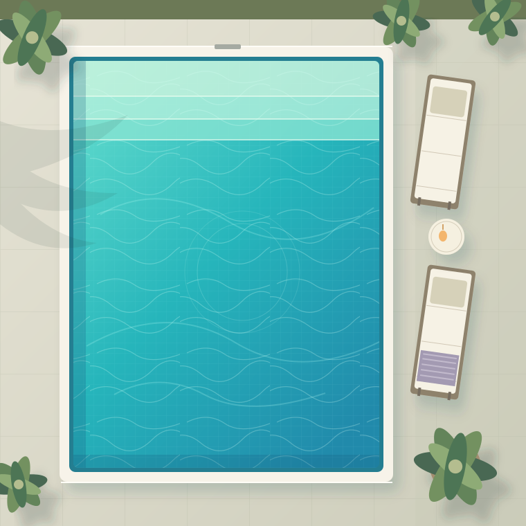

Referencia general del manual. Ayuda a mantener el equilibrio del agua. Con bromo, confirma el ajuste indicado para tu sistema.
LA GUÍA QUE TE ACOMPAÑA
Tu piscina,
siempre a punto.
La guía de Piscinas Ruema para cuidar tu lámina armada y disfrutar de tu piscina durante muchos años.
Empezar mi guíaSin registros. Sin instalaciones. A tu ritmo.

El cuidado empieza en los detalles.Pequeños hábitos, muchos buenos baños.
Tu piscina ya forma parte de casa.
Ahora, cuidarla también será sencillo.
En Piscinas Ruema queremos acompañarte después de la obra. Consulta lo que necesites, cuando lo necesites.
PADUL · GRANADA01 / A TU MEDIDA
Cada piscina tiene su historia.
Cuéntanos cómo es la tuya para mostrarte los consejos que encajan. También puedes seguir sin elegir nada.
Te mostramos consejos generales. Comprueba la gama y el manual de tu piscina antes de aplicar referencias del fabricante.
Ir a los consejos02 / LO ESENCIAL, BIEN EXPLICADO
Menos dudas.
Más tiempo para disfrutar.
Elige un tema o recorre la guía paso a paso.
01 / CONTROL DEL AGUA
El equilibrio lo cambia todo.
Un agua transparente no basta para saber si está equilibrada. Mide con un equipo adecuado y sigue el plan de tu instalación antes de corregir un parámetro.
Referencias para la membrana RENOLIT ALKORPLAN. Proceden del manual oficial consultado el 27/10/2026 [1]. No son dosis ni garantizan que el agua sea apta para el baño. El tratamiento, su etiqueta y los requisitos sanitarios aplicables deben ser compatibles; si difieren, consulta a un profesional.
Expresada como CaCO₃ en el manual actual. Ayuda a estabilizar el pH. No la corrijas sin medirla.
Límite general del manual. El calor agrava el efecto de un agua desequilibrada. No asumas excepciones para tu instalación.
Primero, identifica tu sistema.
No hay una cifra de desinfectante válida para todos los tratamientos. Revisa el equipo y la etiqueta del producto o consulta con tu mantenedor.
Las referencias de cloro dependen de si es estabilizado o no. La cloración salina también produce cloro.
¿Qué más conviene revisar?
La dureza y los metales pueden estar relacionados con incrustaciones y manchas. Pide un análisis profesional si aparecen depósitos, si el pH resulta difícil de estabilizar o si desconoces el origen del agua. El manual actual desaconseja el agua de pozo [1].
Con cloro, revisa también el estabilizante: RENOLIT indica 20–30 ppm en su manual [1]. Es una concentración de referencia, no una cantidad que debas añadir. Un profesional debe valorar el nivel existente y su compatibilidad con el plan de desinfección.
El manual indica controlar el pH al menos semanalmente. El uso, el calor y el tratamiento pueden requerir más controles; sigue el plan establecido para tu piscina.
02 / RUTINA DE MANTENIMIENTO
Un pequeño gesto cada vez.
Marca lo que ya has hecho. Estos grupos te ayudan a organizarte; adapta la frecuencia al uso, al equipo y a las indicaciones de tu profesional.
03 / LIMPIEZA DE LA LÁMINA
Cuídala con suavidad.
Empieza por lo sencillo
Retira las hojas y la suciedad con accesorios en buen estado. Revisa que cepillos, redes y robots sean adecuados para lámina armada y no tengan aristas ni piezas abrasivas [1].
Atiende la línea de agua
Usa un paño o una esponja suave. El PDF original recomienda RENOLIT ALKORCLEAN para grasas y restos de la línea de flotación. Sigue su etiqueta y confirma la compatibilidad con tu revestimiento.
Una mancha, una consulta
No todas las manchas tienen el mismo origen. Evita frotar con fuerza o probar productos concentrados. Si persiste, consulta antes de aplicar un tratamiento o vaciar la piscina.
El robot también necesita una revisión. Comprueba sus cepillos, ruedas y recomendaciones para tu revestimiento. Detén su uso si observas desgaste que pueda rayar.
04 / ERRORES QUE DEBES EVITAR
Lo que no le sienta bien a tu piscina.
Productos concentrados sobre la lámina
Nunca apoyes pastillas ni viertas concentrados sobre el revestimiento. Evita dosificadores flotantes que puedan quedar inmóviles. Aplica cada producto únicamente como permite su etiqueta y tu equipo.
Mezclar productos químicos
No mezcles productos entre sí. El contacto entre hipocloritos y ácidos puede liberar gases tóxicos [3]. No improvises disoluciones ni uses el mismo recipiente para productos incompatibles.
Abrasivos y productos con cobre
El PDF original desaconseja los útiles abrasivos y los tratamientos con cobre. Revisa también la composición de los productos multiacción; una etiqueta comercial no acredita su compatibilidad.
Dejar de medir o vaciar por tu cuenta
Un equipo automático no elimina la necesidad de comprobar el agua. No vacíes la piscina sin asesoramiento: el agua protege la membrana y el vaciado requiere valorar la instalación.
No damos una instrucción universal de dosificación en el skimmer ni de disolución previa: depende de la etiqueta, las incompatibilidades y el sistema instalado.
05 / CADA ÉPOCA, SU CUIDADO
Acompaña el ritmo de tu piscina.
TIEMPO DE DISFRUTAR
Ver mi rutina El cuidado forma parte del baño.
Mantén el nivel de agua y revisa el equilibrio y la filtración según el uso. Retira la suciedad antes de que se acumule y presta atención a la línea de flotación.
06 / PREGUNTAS FRECUENTES
Las dudas también se resuelven.
No sé qué gama de lámina tengo. ¿Puedo usar la guía?
Sí, puedes consultar los consejos generales. Busca el modelo en la documentación de la obra o pregúntanos por tu contacto habitual. No apliques automáticamente referencias RENOLIT si el revestimiento es de otro fabricante.
¿La cloración salina evita tener que controlar el cloro?
No. La electrólisis de sal produce cloro y requiere control. RENOLIT aconseja comprobarlo manualmente también cuando hay regulación automática [2]. Sigue asimismo el manual del clorador.
¿Puedo tratar una mancha con una pastilla de cloro?
No la pongas sobre la lámina. El contacto concentrado puede dañarla o decolorarla. Consulta el origen de la mancha antes de elegir un tratamiento.
El agua está turbia o veo un valor fuera del rango. ¿Me baño?
Esta guía no puede confirmar que el agua sea segura. Si hay turbidez, irritación o un resultado anómalo, evita el baño hasta que un profesional compruebe y restablezca las condiciones adecuadas. No calcules una dosis a partir de estas referencias.
¿Cuántas horas tengo que filtrar?
No hay una cifra universal: depende del volumen, el caudal real, el filtro, la temperatura y el uso. Sigue el plan de tu instalación. Antes de manipular o limpiar un equipo, consulta sus instrucciones de desconexión y seguridad.
¿Tengo que vaciarla para pasar el invierno?
El PDF original recomienda protegerla y mantenerla llena. Pide un plan de invernaje adaptado al clima, al cobertor y a los equipos. Cualquier ajuste de nivel debe valorar los skimmers y el riesgo de heladas.
¿Por qué algunos valores cambian respecto al folleto antiguo?
Las publicaciones consultadas no coinciden en todos los rangos. Aquí se identifica como referencia principal el manual enlazado actualmente por RENOLIT. Comprueba las instrucciones aplicables a tu instalación y resuelve cualquier diferencia con un profesional. Puedes consultar el detalle en las fuentes.
¿Se guardan mis preferencias o mis tareas?
No se guardan en cookies, almacenamiento local ni una base de datos. Solo existen en la memoria de esta página y se reinician al recargar, cerrar o volver a ella. El proveedor de alojamiento puede procesar datos técnicos de acceso; consulta el aviso de privacidad de esta guía.
SEGUIMOS A TU LADO
Tu piscina.
Nuestro compromiso contigo.
Para una duda sobre tu instalación, habla con Piscinas Ruema por tu vía de contacto habitual.
Contactar por WhatsApp ↗
Padul, Granada
WhatsApp no está habilitado en esta guía.
Construcción · Reparación · MantenimientoPadul, Granada
Fuentes, alcance y revisión técnica
Revisión documental: 27 de octubre de 2026. Punto de partida: el PDF «ES-2020_Consejos-de-Mantenimiento.pdf», de dos páginas, aportado por Piscinas Ruema. No se redistribuye el PDF ni se reproducen sus fotografías.
- RENOLIT ALKORPLAN: manual de mantenimiento ↗. El PDF enlazado actualmente se utiliza para las referencias de agua. Abrir el documento oficial ↗.
- RENOLIT: preguntas frecuentes para propietarios ↗. Apoyo para electrólisis salina e invernaje.
- INSST: NTP 690, peligrosidad de los productos químicos ↗. Referencia sobre incompatibilidades químicas; no se usa como normativa actual de piscinas particulares.
Diferencias documentadas. El folleto de 2020 indica pH 7,0–7,6, cloro 1 ppm y TAC 100–175 ppm. El manual actual indica pH 7,2–7,6, separa cloro estabilizado (0,7–1,5 mg/l) y no estabilizado (0,3–1,0 mg/l), y sitúa el TAC en 100–140 ppm como CaCO₃. Para bromo, el original indica 1 ppm y el manual actual 1–2 mg/l. No se combinan ambos documentos para construir un rango nuevo.
No se han documentado aquí diferencias de mantenimiento entre VOGUE, TOUCH y ALIVE: se muestran consejos generales del fabricante, sin atribuir prestaciones o cuidados exclusivos a una gama. «Otra gama» requiere comprobar su documentación.
Las rutinas organizan tareas y no fijan frecuencias obligatorias. La guía no sustituye el manual de la instalación, la etiqueta de los productos, el asesoramiento profesional ni los requisitos sanitarios aplicables. No incluye dosis, promesas de duración ni garantías comerciales.
Tu privacidad en esta guía
Esta guía no solicita datos personales, no usa cuentas, formularios de contacto, publicidad, analítica, cookies de seguimiento ni almacenamiento persistente. Las selecciones y tareas se procesan en la memoria del navegador y no se envían a Piscinas Ruema ni a un servidor.
La carga de la web requiere que el proveedor de alojamiento reciba información técnica, como la dirección IP y datos de la petición. Si se publica en GitHub Pages, ese proveedor puede procesarla conforme a sus condiciones. Declaración de privacidad de GitHub ↗.
Las fuentes oficiales se abren únicamente si pulsas sus enlaces y tienen sus propias políticas. No hay contenido externo incrustado. Si en el futuro se habilita WhatsApp, pulsar el botón abrirá ese servicio: no enviará mensajes automáticamente ni incluirá tus selecciones. La conversación tendrá las condiciones de WhatsApp.